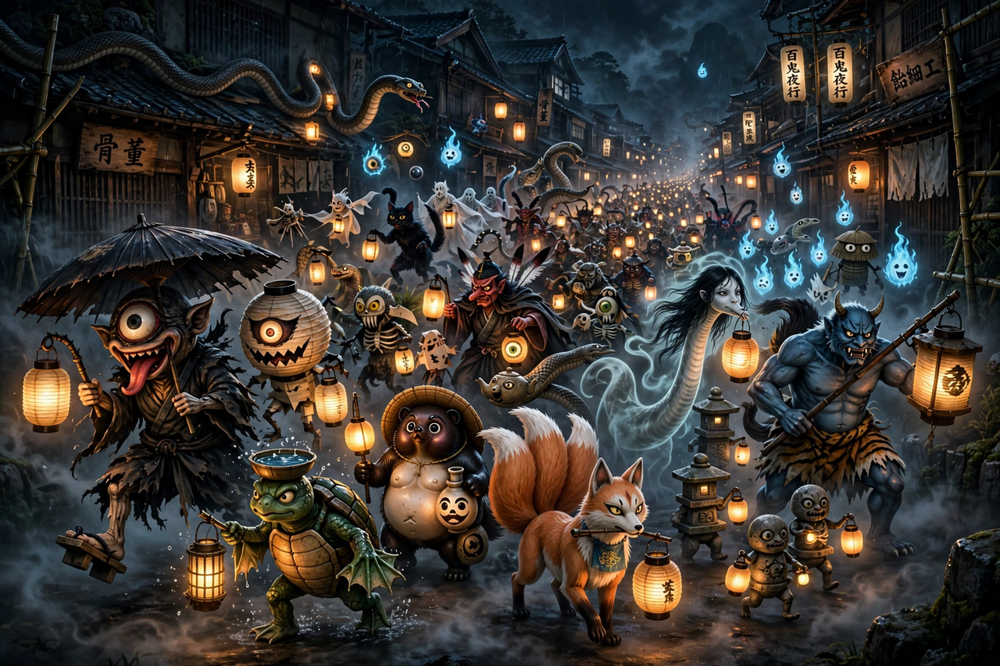

| Yōkai | |
|---|---|
| Japanese | 妖怪 ("strange apparition") |
| Tradition | Japanese folklore |
| Noted cataloguer | Toriyama Sekien (18th century) |
| Famous examples | Kappa, Tengu, Oni, Kitsune, Tanuki |
| Related concepts | Kami, yūrei (ghosts), tsukumogami |

Yōkai (妖怪, "strange apparition") are a class of supernatural entities and spirits in Japanese folklore. The word is a compound of the kanji for "bewitching" and "mystery". Yōkai range from the malevolent oni to the mischievous kappa and the merely strange, and they include animal spirits, transformed objects, natural phenomena given form, and the spirits of the dead. Thousands of distinct yōkai are recorded.
Belief in yōkai is rooted in early Japanese animism and the Shinto idea that spirits inhabit the natural world. During the Edo period (1603–1868), the publishing boom produced encyclopaedias of the supernatural: Toriyama Sekien's illustrated catalogues, beginning with Gazu Hyakki Yagyō ("The Illustrated Night Parade of a Hundred Demons", 1776), fixed the appearance of many yōkai and even invented some outright. The Hyakki Yagyō — the night parade in which a hundred kinds of demons march through empty streets — became a favourite subject of picture scrolls.
Yōkai were popularised for modern audiences by the manga artist Shigeru Mizuki, whose GeGeGe no Kitarō made hundreds of folk creatures household names. Yōkai now pervade Japanese and global popular culture, inspiring franchises such as Yo-kai Watch and Pokémon, and they remain a subject of serious folkloristics.